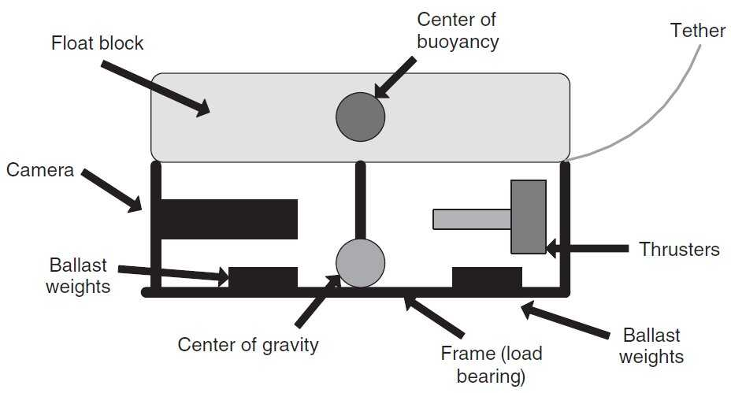
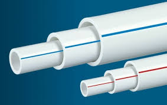
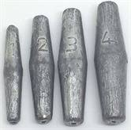
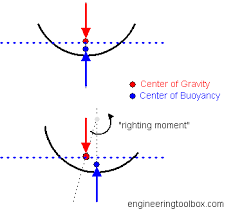
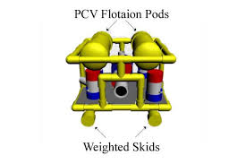
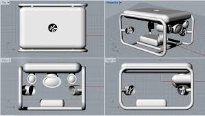
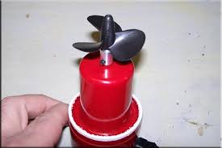
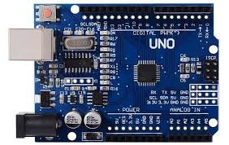
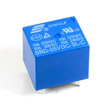
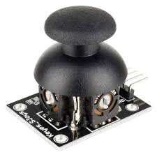

Underwater drone are remote control underwater robots that driven by an individ- ual on the surface. These robots are tethered by a series of wires. All Underwater drones are equipped with a video camera, propulsion system and lights. The device is equipped with a video camera, propulsion system and lights. Other equipment is added depending on the specification required.
Underwater Drones, provides innovation and opens new market. It can be used to inspect critical infrastructures like dams, bridges,underwater pipelines were divers could not reach. It can be also used in rescue operations. That is if a person falls down in a reservoir we can use this device in the entire area to find out the person.
Currently we have implemented an underwater drone. What is left to be done is including robotic arm which can then be used in river bed cleaning by picking and placing items. If time permits, sensors like gyroscope, depth sensors can also be used for the same.
The structure dives through the water using its frame and propulsion system. There are many factors that needed to be considered while designing the frame and propulsion system.

It is the skeleton of the underwater drone that we have designed. It supports the propulsion system and the ballast. It is a cuboidal structure. Frame is usually an open, box-shaped structure. Holes are included in the frame so that air trapped can escape.
Different materials like PVC and aluminium were available. As PVC materials were easy accessible, cost effective, require less tools for opera- 8tion we prefer PVC over other materials. A better PVC known as uPVC were considered as it was having better mechanical strength and less plasticity.
The frame used is a cuboidal structure which is symmetric about x and y axis. It helps to maintain the stability of the system when different forces act from different motors.
The shapes of the motor, frame(pipe), ballast, propulsion motor are of cylindrical shape. The cylindrical shape helps in distributing hydraulic pressure uniformly around surfaces.
For stability of the structure we use weights and float. Float are placed at top of the frame as it provides positive buoyancy(poitive buoyancy is the property of a material to float in water) and weights are placed at the bottom of the frame as it provides negative buoyancy(negative buoyancy is the property of the material to sink in water), therefore to maintain stability of the device we use the property of neutral buoyancy. Weights are placed such a way by subtracting the whole weight of the system.
After considering these factors, we selected the components used for designing the frame:-

uPVC is a thermoplastic material derived from common salt and fossil fuels. The pipe material has the longest track record of all plastic materials. The first uPVC pipes weremade in the 1930s. Beginning in the 1950s, uPVC pipes were used to replace corroded metal pipes and thus bring fresh drinking water to a growing rural and later urban population. uPVC pipes are certified safe for drinking water per NSF Standard 61 and used extensively for water distribution and transmission pipelines throughout North America and around the world. uPVC is allowed for waste lines in homes and is the most often used pipe for sanitary sewers.
Further pressure and non-pressure applications in the field of sewers, soil and waste, gas(low pressure) and cable protection soon followed. The material’s con- tribution to public health, hygiene and well-being has therefore been significant.
uPVC has high chemical resistance across its operating temperature range, with a broad band of operating pressures. Max operating temperature is reported at 140 degree farenheit, and max working pressure: 450 PSI. Due to its long- term strength characteristics, high stiffness and cost effectiveness, uPVC systems account for a large proportion of plastic piping installations and some estimations put it that greater than two million miles of uPVC pipe are currently in service across applications.

Weights are mainly used to control the vehicle without flipping. While considering about weights we need to consider about three concepts which will be mentioned below.

The center of buoyancy(CB) is located at the geometric center of the portion of the vessel that is underwater. The buoyant force acts upward through this point. The center of gravity(CG) is located at the point where all the effects of gravity acting on the vessel appear to concentrate. Total vessel weight act downward through the CG.

Floatation is used to balance the sinking tendency of the other parts(which are heavy) and thus it allows ROV to float effortlessly in mid-water. It conserves the power that would otherwise be needed to lift the ROV.

The key factors to be considered in any propulsion system are: Number of thrusters,Location of thrusters,Thrust (force) produced. The propulsion system directly depends on the power supply. All underwater robots use electrical energy. Power distribution system is used to channel the energy to various components that need it. The thrusters are motorized propellers used to generate the forces to propel the vehicle through the water. The proposed frame has a square shape in which each of the propellers is placed in the 4 corners and one is placed at the centre at the top. The main component of the propulsion system is a motor used is bilge pump used along with a propeller.
In our design we have used the most often applied configuration - 5 thrusters propulsion system. It allows us to divide the propulsion system into two indepen- dent subsystems responsible for movements in the planes(horizontal and vertical).

The bilge pumps together with propellers are used for propulsion. A bilge pump is a water pump used to remove bilge water from boats. It mainly works in 12v battery and it is already waterproofed. It is a non-automatic 1100GPH bilge pumps which offer water evacuation activated by a panel. It includes Anti-Airlock protection and exclusive moisture tight seals and marine grade wiring. It works in Marine water upto 20ft depth. It’s also suitable for pond water pumping, water research, solar water system etc.
A single motor used in the system uses 5 to 6 amps of current, so current output of 30 amps is required for proper functioning of the motors. For this purpose we use a lithium ion car batteries which provide a peak current of 23ApH. The car batteries are affordable. But these cant be used if you need the power source within the ROV.
The control box helps the observer to control the rov which has been launched into underwater. The main components which were used to build the control box was:-

The microcontroller used is Arduino Uno. It is an open source microcontroller board based on the Microchip ATmega328P microcontroller and developed by arduino cc. The board is equipped with sets of digital and analog input/output pins that may be interfaced to various expansion boards and other circuits. The board has 14 Digital pins,6 analog pins , and programmable with the Arduino IDE via a USB cable. It accepts voltages between 7 and 20 volts.

A relay is an electrically operated switch. They use electromagnet to mechanically operate a switch. In our control box we use relay for bidirectional control of our driving motors, for this we use 5V two channel relay.

The arduino joystick is similar to two potentiometers connected together , one for vertical movement (y axis) and for horizontal movement (x axis). In our project we use two joysticks. one for vertical movement along z plane and another one for x and y axis movement in horizontal plane.
Current system has a control system with all components on the land, an alternation include where the motion controllers alone are put on the land, and other components inside the system with a waterproof sealing. But this also require an extra expense on the tight casing which is a hard task. The motor used can be upgraded from brushed motors to brush less motors which will provide high power. An update on the frame material from uPVC to aluminium frame is also recommended. An important update which can be included is replacement of relay with motor drivers. In our project we use 24 relays instead of motor drivers as they were very expensive.
I suggest you change this conclusion to something more simple, smaller and understandable
ROVs are unoccupied, usually highly manoeuvrable, and operated by a crew either aboard a vessel/floating platform or on proximate land. They are common in deepwater industries such as offshore hydrocarbon extraction. They are linked to a host ship by a neutrally buoyant tether or, often when working in rough conditions or in deeper water, a load-carrying umbilical cable is used along with a tether management system (TMS). The TMS is either a garage-like device which contains the ROV during lowering through the splash zone or, on larger work- class ROVs, a separate assembly which sits on top of the ROV. The purpose of the TMS is to lengthen and shorten the tether so the effect of cable drag where there are underwater currents is minimized. The umbilical cable is an armored cable that contains a group of electrical conductors and fiber optics that carry electric power, video, and data signals between the operator and the TMS. Where used, the TMS then relays the signals and power for the ROV down the tether cable. Once at the ROV, the electric power is distributed between the components of the ROV. However, in high-power applications, most of the electric power drives a high-power electric motor which drives a hydraulic pump. The pump is then used for propulsion and to power equipment such as torque tools and manipulator arms where electric motors would be too difficult to implement subsea. Most ROVs are equipped with at least a video camera and lights. Additional equipment is commonly added to expand the vehicle’s capabilities. These may include sonar’s, magnetometers, a still camera, a manipulator or cutting arm, water samplers, and instruments that measure water clarity, water temperature, water density, sound velocity, light penetration, and temperature. Also optical-stereo cameras have been mounted on ROVs in order to improve the pilots’ perception of the underwater scenario.